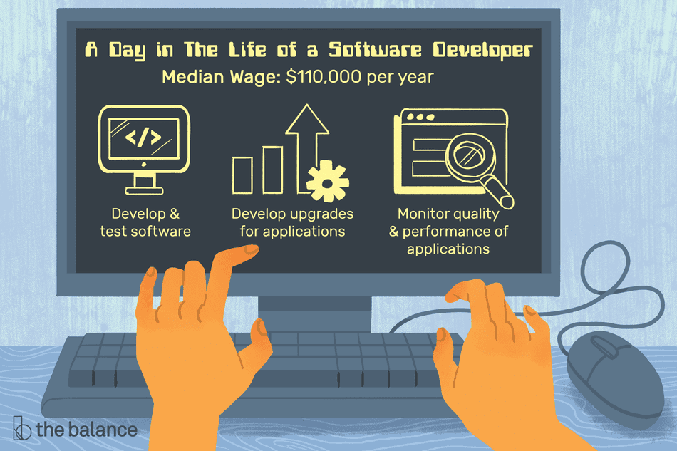
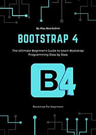

This is my first blog and if you want more information then plz subscrib here
Welcome to my blog. Subscribe and get my latest blog post in your inbox.
How to become a developer.
Have you ever thought about becoming a software developer or looking for a change of career? This article will give you a solid plan to get you started in software development and get you your first job!
Read more →
Python Developer job description template.
This Python Developer job description template includes the list of most important Python Developer's duties and responsibilities. It is customizable and ready to post to job boards.
Read more →

Software Developer Duties & Responsibilities.
Developers can work in systems software or in applications such as those for mobile devices, but their duties are similar in many cases....
Read more →
HTML5 Developer job description template.
This HTML5 Developer job description template includes the list of most important HTML5 Developer 's duties and responsibilities. It is customizable and ready to post to job boards. Use it to save time, attract qualified candidates
and hire best employees
Read more →

Bootstrap · The most popular HTML, CSS, and JS library in the world.
Bootstrap is an open source toolkit for developing with HTML, CSS, and JS. Quickly prototype your ideas or build your entire app with our Sass variables and mixins
Read more →